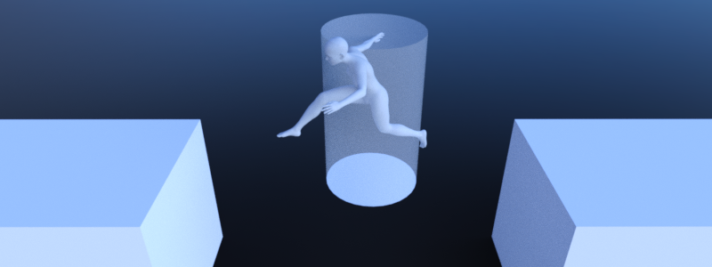
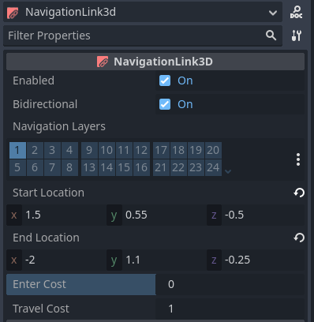
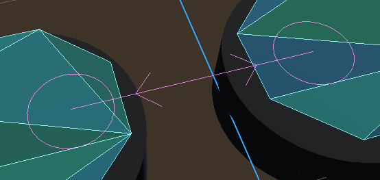

Using NavigationLinks

NavigationLinks are used to connect navigation mesh polygons from NavigationRegion2D and NavigationRegion3D over arbitrary distances for pathfinding.
NavigationLinks are also used to consider movement shortcuts in pathfinding available through interacting with gameplay objects e.g. ladders, jump pads or teleports.
2D and 3D versions of NavigationJumplinks nodes are available as NavigationLink2D and NavigationLink3D respectively.
Different NavigationRegions can connect their navigation meshes without the need for a NavigationLink
as long as they have overlapping edges or edges that are within navigation map edge_connection_margin.
As soon as the distance becomes too large, building valid connections becomes a problem - a problem that NavigationLinks can solve.
See Using NavigationRegions to learn more about the use of navigation regions. See Connecting navigation meshes to learn more about how to connect navigation meshes.

NavigationLinks share many properties with NavigationRegions like navigation_layers.
NavigationLinks add a single connection between two positions over an arbitrary distance
compared to NavigationRegions that add a more local traversable area with a navigation mesh resource.
NavigationLinks have a start_position and end_position and can go in both directions when bidirectional is enabled.
When placed a navigationlink connects the navigation mesh polygons closest to its start_position and end_position within search radius for pathfinding.
The polygon search radius can be configured globally in the ProjectSettings under navigation/2d_or_3d/default_link_connection_radius
or set for each navigation map individually using the NavigationServer.map_set_link_connection_radius() function.
Both start_position and end_position have debug markers in the Editor.
The arrows indicate which direction the link can be travelled across, and the visible radius of
a position shows the polygon search radius. All navigation mesh polygons inside are compared and
the closest is picked for the edge connection. If no valid polygon is found within the search
radius the navigation link gets disabled.

The link debug visuals can be changed in the Editor ProjectSettings under debug/shapes/navigation.
The visibility of the debug can also be controlled in the Editor 3D Viewport gizmo menu.
A navigation link does not provide any specialized movement through the link. Instead, when an agent reaches the position of a link, game code needs to react (e.g. through area triggers) and provide means for the agent to move through the link to end up at the links other position (e.g. through teleport or animation). Without that an agent will attempt to move itself along the path of the link. You could end up with an agent walking over a bottomless pit instead of waiting for a moving platform, or walking through a teleporter and proceeding through a wall.
Navigation link script templates
The following script uses the NavigationServer to create a new navigation link.
extends Node2D
var link_rid: RID
var link_start_position: Vector2
var link_end_position: Vector2
func _ready() -> void:
link_rid = NavigationServer2D.link_create()
var link_owner_id: int = get_instance_id()
var link_enter_cost: float = 1.0
var link_travel_cost: float = 1.0
var link_navigation_layers: int = 1
var link_bidirectional: bool = true
NavigationServer2D.link_set_owner_id(link_rid, link_owner_id)
NavigationServer2D.link_set_enter_cost(link_rid, link_enter_cost)
NavigationServer2D.link_set_travel_cost(link_rid, link_travel_cost)
NavigationServer2D.link_set_navigation_layers(link_rid, link_navigation_layers)
NavigationServer2D.link_set_bidirectional(link_rid, link_bidirectional)
# Enable the link and set it to the default navigation map.
NavigationServer2D.link_set_enabled(link_rid, true)
NavigationServer2D.link_set_map(link_rid, get_world_2d().get_navigation_map())
# Move the 2 link positions to their intended global positions.
NavigationServer2D.link_set_start_position(link_rid, link_start_position)
NavigationServer2D.link_set_end_position(link_rid, link_end_position)
using Godot;
public partial class MyNode2D : Node2D
{
private Rid _linkRid;
private Vector2 _linkStartPosition;
private Vector2 _linkEndPosition;
public override void _Ready()
{
_linkRid = NavigationServer2D.LinkCreate();
ulong linkOwnerId = GetInstanceId();
float linkEnterCost = 1.0f;
float linkTravelCost = 1.0f;
uint linkNavigationLayers = 1;
bool linkBidirectional = true;
NavigationServer2D.LinkSetOwnerId(_linkRid, linkOwnerId);
NavigationServer2D.LinkSetEnterCost(_linkRid, linkEnterCost);
NavigationServer2D.LinkSetTravelCost(_linkRid, linkTravelCost);
NavigationServer2D.LinkSetNavigationLayers(_linkRid, linkNavigationLayers);
NavigationServer2D.LinkSetBidirectional(_linkRid, linkBidirectional);
// Enable the link and set it to the default navigation map.
NavigationServer2D.LinkSetEnabled(_linkRid, true);
NavigationServer2D.LinkSetMap(_linkRid, GetWorld2D().NavigationMap);
// Move the 2 link positions to their intended global positions.
NavigationServer2D.LinkSetStartPosition(_linkRid, _linkStartPosition);
NavigationServer2D.LinkSetEndPosition(_linkRid, _linkEndPosition);
}
}
extends Node3D
var link_rid: RID
var link_start_position: Vector3
var link_end_position: Vector3
func _ready() -> void:
link_rid = NavigationServer3D.link_create()
var link_owner_id: int = get_instance_id()
var link_enter_cost: float = 1.0
var link_travel_cost: float = 1.0
var link_navigation_layers: int = 1
var link_bidirectional: bool = true
NavigationServer3D.link_set_owner_id(link_rid, link_owner_id)
NavigationServer3D.link_set_enter_cost(link_rid, link_enter_cost)
NavigationServer3D.link_set_travel_cost(link_rid, link_travel_cost)
NavigationServer3D.link_set_navigation_layers(link_rid, link_navigation_layers)
NavigationServer3D.link_set_bidirectional(link_rid, link_bidirectional)
# Enable the link and set it to the default navigation map.
NavigationServer3D.link_set_enabled(link_rid, true)
NavigationServer3D.link_set_map(link_rid, get_world_3d().get_navigation_map())
# Move the 2 link positions to their intended global positions.
NavigationServer3D.link_set_start_position(link_rid, link_start_position)
NavigationServer3D.link_set_end_position(link_rid, link_end_position)
using Godot;
public partial class MyNode3D : Node3D
{
private Rid _linkRid;
private Vector3 _linkStartPosition;
private Vector3 _linkEndPosition;
public override void _Ready()
{
_linkRid = NavigationServer3D.LinkCreate();
ulong linkOwnerId = GetInstanceId();
float linkEnterCost = 1.0f;
float linkTravelCost = 1.0f;
uint linkNavigationLayers = 1;
bool linkBidirectional = true;
NavigationServer3D.LinkSetOwnerId(_linkRid, linkOwnerId);
NavigationServer3D.LinkSetEnterCost(_linkRid, linkEnterCost);
NavigationServer3D.LinkSetTravelCost(_linkRid, linkTravelCost);
NavigationServer3D.LinkSetNavigationLayers(_linkRid, linkNavigationLayers);
NavigationServer3D.LinkSetBidirectional(_linkRid, linkBidirectional);
// Enable the link and set it to the default navigation map.
NavigationServer3D.LinkSetEnabled(_linkRid, true);
NavigationServer3D.LinkSetMap(_linkRid, GetWorld3D().NavigationMap);
// Move the 2 link positions to their intended global positions.
NavigationServer3D.LinkSetStartPosition(_linkRid, _linkStartPosition);
NavigationServer3D.LinkSetEndPosition(_linkRid, _linkEndPosition);
}
}